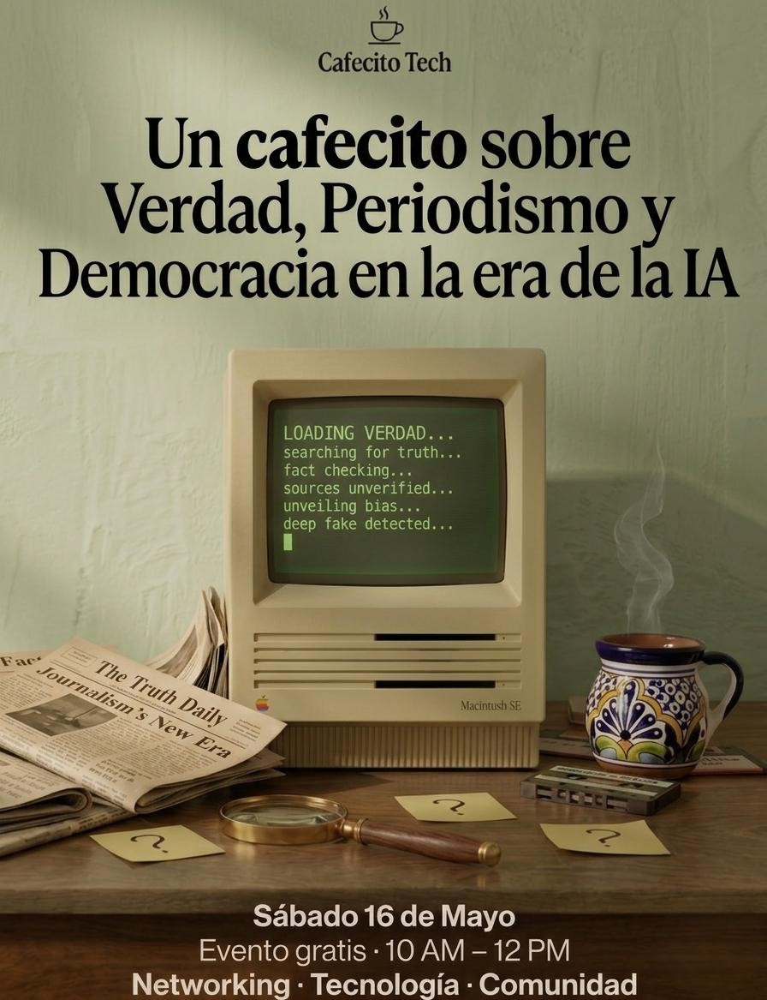

Sesión #3: Verdad, Periodismo y Democracia en la era de la IA
Acerca del Evento
Acompáñanos el sábado 16 de Mayo a un espacio para latinos curiosos por la tecnología, donde hablamos de temas relevantes sin tecnicismos, en español, y en un ambiente relajado.
☕ ¿Qué es verdad hoy? ¿Cómo saber qué creer en un mundo donde la IA puede escribir un artículo, clonar una voz, o generar una imagen que nunca existió?
Todos — sin excepción — somos susceptibles a la desinformación. Ven a explorar con nosotros el rol de la IA en la desinformación, y cómo usarla a nuestro favor — para verificar, cuestionar, y pensar con más criterio en un mundo saturado de contenido.
En esta sesión habrá:
- 🗣 Conversaciones en mesas redondas con preguntas provocativas
- 🎤 Panel con voces del periodismo latino local
- ❓ Espacio para tus preguntas y reflexiones
- ☕ Café, networking y conversación en español
📅 Sábado 16 de mayo · 🕙 10:00 AM – 12:00 PM · 📍 Higher Grounds Café · 🏟 Gratis
Cupos limitados para mantenerlo íntimo y conversable.
🏟 Reserva tu entrada
Aparta tu lugar. ¡Cupos limitados!